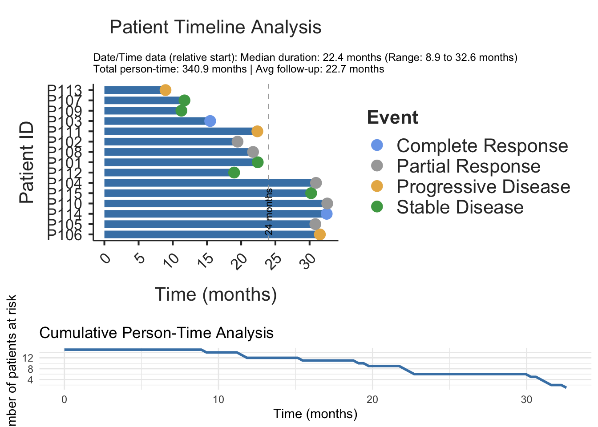

Vignette: Creating Advanced Swimmer Plots with Date and Event Handling
Analysis by Gemini
2025-07-12
Source:vignettes/clinicopath-descriptives-11-swimmerplot.Rmd
clinicopath-descriptives-11-swimmerplot.Rmd
# Create a sample data frame using dates
set.seed(42)
n_patients <- 15
treatment_start_dates <- as.Date("2022-01-01") + sample(1:60, n_patients, replace = TRUE)
treatment_durations_days <- sample(60:1000, n_patients, replace = TRUE)
melanoma_study <- data.frame(
Subject_ID = paste("P", 101:(100 + n_patients), sep = ""),
Start_Date = treatment_start_dates,
End_Date = treatment_start_dates + treatment_durations_days,
Best_Response = factor(sample(c("Complete Response", "Partial Response", "Stable Disease", "Progressive Disease"),
n_patients, replace = TRUE, prob = c(0.2, 0.4, 0.3, 0.1))),
Survival_Days = treatment_durations_days + sample(0:300, n_patients, replace = TRUE)
)
head(melanoma_study)
#> Subject_ID Start_Date End_Date Best_Response Survival_Days
#> 1 P101 2022-02-19 2024-01-01 Stable Disease 826
#> 2 P102 2022-02-07 2023-09-21 Partial Response 699
#> 3 P103 2022-01-02 2023-04-16 Complete Response 665
#> 4 P104 2022-01-26 2024-08-24 Partial Response 944
#> 5 P105 2022-01-11 2024-08-06 Partial Response 1163
#> 6 P106 2022-02-06 2024-09-21 Progressive Disease 1172
# This code simulates how the jamovi module would be called in an R environment.
# You would need the ClinicoPathDescriptives package installed.
# Load the library
library(ClinicoPath)
#> Warning: replacing previous import 'dplyr::as_data_frame' by
#> 'igraph::as_data_frame' when loading 'ClinicoPath'
#> Warning: replacing previous import 'DiagrammeR::count_automorphisms' by
#> 'igraph::count_automorphisms' when loading 'ClinicoPath'
#> Warning: replacing previous import 'dplyr::groups' by 'igraph::groups' when
#> loading 'ClinicoPath'
#> Warning: replacing previous import 'DiagrammeR::get_edge_ids' by
#> 'igraph::get_edge_ids' when loading 'ClinicoPath'
#> Warning: replacing previous import 'dplyr::union' by 'igraph::union' when
#> loading 'ClinicoPath'
#> Warning: replacing previous import 'dplyr::select' by 'jmvcore::select' when
#> loading 'ClinicoPath'
#> Warning: replacing previous import 'igraph::union' by 'lubridate::union' when
#> loading 'ClinicoPath'
#> Warning: replacing previous import 'igraph::%--%' by 'lubridate::%--%' when
#> loading 'ClinicoPath'
#> Warning: replacing previous import 'cutpointr::tnr' by 'mlr3measures::tnr' when
#> loading 'ClinicoPath'
#> Warning: replacing previous import 'cutpointr::precision' by
#> 'mlr3measures::precision' when loading 'ClinicoPath'
#> Warning: replacing previous import 'cutpointr::tn' by 'mlr3measures::tn' when
#> loading 'ClinicoPath'
#> Warning: replacing previous import 'cutpointr::fnr' by 'mlr3measures::fnr' when
#> loading 'ClinicoPath'
#> Warning: replacing previous import 'cutpointr::tp' by 'mlr3measures::tp' when
#> loading 'ClinicoPath'
#> Warning: replacing previous import 'cutpointr::npv' by 'mlr3measures::npv' when
#> loading 'ClinicoPath'
#> Warning: replacing previous import 'cutpointr::ppv' by 'mlr3measures::ppv' when
#> loading 'ClinicoPath'
#> Warning: replacing previous import 'cutpointr::auc' by 'mlr3measures::auc' when
#> loading 'ClinicoPath'
#> Warning: replacing previous import 'cutpointr::tpr' by 'mlr3measures::tpr' when
#> loading 'ClinicoPath'
#> Warning: replacing previous import 'cutpointr::fn' by 'mlr3measures::fn' when
#> loading 'ClinicoPath'
#> Warning: replacing previous import 'cutpointr::fp' by 'mlr3measures::fp' when
#> loading 'ClinicoPath'
#> Warning: replacing previous import 'cutpointr::fpr' by 'mlr3measures::fpr' when
#> loading 'ClinicoPath'
#> Warning: replacing previous import 'cutpointr::recall' by
#> 'mlr3measures::recall' when loading 'ClinicoPath'
#> Warning: replacing previous import 'cutpointr::specificity' by
#> 'mlr3measures::specificity' when loading 'ClinicoPath'
#> Warning: replacing previous import 'cutpointr::sensitivity' by
#> 'mlr3measures::sensitivity' when loading 'ClinicoPath'
#> Warning: replacing previous import 'cutpointr::roc' by 'pROC::roc' when loading
#> 'ClinicoPath'
#> Warning: replacing previous import 'mlr3measures::auc' by 'pROC::auc' when
#> loading 'ClinicoPath'
#> Warning: replacing previous import 'igraph::as_data_frame' by
#> 'tibble::as_data_frame' when loading 'ClinicoPath'
#> Warning: replacing previous import 'igraph::crossing' by 'tidyr::crossing' when
#> loading 'ClinicoPath'
#> Warning: replacing previous import 'magrittr::extract' by 'tidyr::extract' when
#> loading 'ClinicoPath'
#> Warning: replacing previous import 'mlr3measures::sensitivity' by
#> 'caret::sensitivity' when loading 'ClinicoPath'
#> Warning: replacing previous import 'mlr3measures::specificity' by
#> 'caret::specificity' when loading 'ClinicoPath'
#> Registered S3 methods overwritten by 'useful':
#> method from
#> autoplot.acf ggfortify
#> fortify.acf ggfortify
#> fortify.kmeans ggfortify
#> fortify.ts ggfortify
#> Warning: replacing previous import 'jmvcore::select' by 'dplyr::select' when
#> loading 'ClinicoPath'
#> Registered S3 methods overwritten by 'ggpp':
#> method from
#> heightDetails.titleGrob ggplot2
#> widthDetails.titleGrob ggplot2
#> Warning: replacing previous import 'DataExplorer::plot_histogram' by
#> 'grafify::plot_histogram' when loading 'ClinicoPath'
#> Warning: replacing previous import 'dplyr::select' by 'jmvcore::select' when
#> loading 'ClinicoPath'
#> Warning: replacing previous import 'tibble::view' by 'summarytools::view' when
#> loading 'ClinicoPath'
# Run the swimmer plot analysis using the new, correct arguments
results <- swimmerplot(
data = melanoma_study,
patientID = "Subject_ID",
start = "Start_Date",
end = "End_Date",
event = "Best_Response",
sortVariable = "Survival_Days",
timetype = "datetime",
timetypeoutput = "months",
referenceLines = "custom",
customReferenceTime = 24,
milestone1Date = NULL,
milestone2Date = NULL,
milestone3Date = NULL,
milestone4Date = NULL,
milestone5Date = NULL
)
# The result is a plot image.
print(results$plot)
#> TableGrob (2 x 1) "arrange": 2 grobs
#> z cells name grob
#> 1 1 (1-1,1-1) arrange gtable[layout]
#> 2 2 (2-2,1-1) arrange gtable[layout]